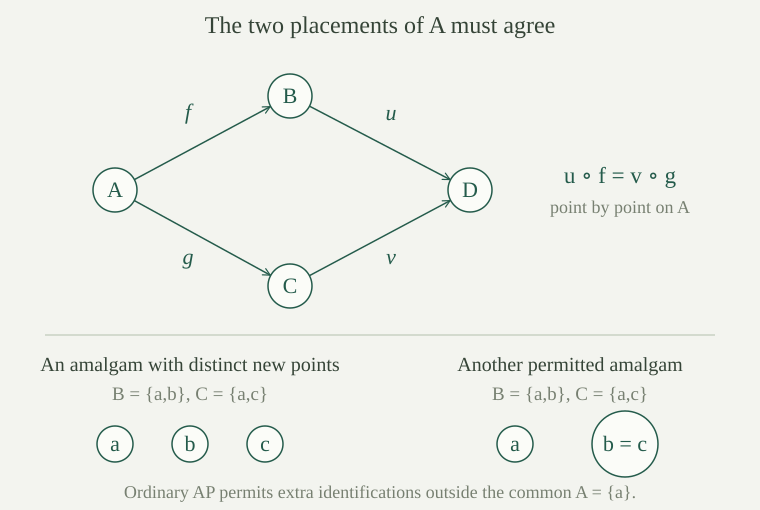

Fix a finite relational language \(L\): it has finitely many relation symbols, each of finite arity, and no function symbols or constants. Equality belongs to the logic. If \(M\) is an \(L\)-structure and \(A\subseteq |M|\), the induced substructure \(M\mathbin{\upharpoonright}A\) has carrier \(A\) and interprets every relation by restriction:
There are no functions whose values could leave \(A\), so every subset gives a substructure. In this entry, these structures may have empty carriers. This convention includes the empty induced substructure and is used for finite-structure constructions; when speaking of models of first-order theories, we retain the corpus convention of nonempty carriers. A nullary relation has a truth value, which is inherited even on the empty induced substructure.
An embedding \(f:A\hookrightarrow B\) is an injective map such that, for every relation symbol \(R\) and every tuple \(\bar a\) from \(A\),
Thus \(f\) is an isomorphism from \(A\) onto the substructure induced on its image. Preserving only true relations is insufficient: a map that turns a false relation into a true one is not an embedding. This is the same distinction captured by signed atomic diagrams. For finite induced substructures, their isomorphisms are precisely the finite partial isomorphisms between the ambient structures.
The age of \(M\), written \(\operatorname{Age}(M)\), is the class of all finite \(L\)-structures that embed into \(M\). We regard isomorphic copies as belonging to the same class: membership does not depend on the names of the elements. Equivalently, its isomorphism types are those of the structures induced on finite subsets of \(M\).
A class \(K\) is closed under isomorphism if \(A\in K\) and \(A\cong B\) imply \(B\in K\). It has arbitrarily large members if, for every \(n\in\mathbb N\), some \(A\in K\) has at least \(n\) elements. This is stronger than merely saying that the class is nonempty.
Let \(K\) be a class of finite \(L\)-structures closed under isomorphism. Its hereditary property, abbreviated HP, says that every induced substructure of a member of \(K\) also belongs to \(K\). Its joint embedding property, abbreviated JEP, says that for any \(A,B\in K\), there are \(C\in K\) and embeddings \(A\hookrightarrow C\), \(B\hookrightarrow C\).
The embeddings in JEP need not have disjoint images. The requirement is that both structures can occur together in one permitted finite structure.
For every \(L\)-structure \(M\), its age is nonempty, is closed under isomorphism, and has HP and JEP. If \(M\) is countable, its age has at most countably many isomorphism types.
The empty induced substructure belongs to the age. Composing an isomorphism with an embedding proves closure under isomorphism. Composing two embeddings proves HP. For JEP, embed \(A,B\) into \(M\), take the union of their finite images, and induce the structure from \(M\) on that union. Both embeddings then have their images in this finite member of the age.
If \(M\) is countable, its finite subsets form a countable set. Every isomorphism type in the age is represented by one of their induced structures, so there are at most countably many types.
In a finite relational language, there are only finitely many structures on each fixed finite carrier and at most countably many finite structures up to isomorphism. Consequently, every nonempty isomorphism-closed class \(K\) of finite structures has a list \(A_0,A_1,\ldots\) meeting all its isomorphism types, with repetitions allowed.
On the carrier \(\{0,\ldots,n-1\}\), a relation of arity \(r\) is a subset of the finite set of \(r\)-tuples. There are only finitely many choices for it. Taking the product over the finitely many symbols still gives finitely many choices. This also covers nullary relations: the set of empty tuples has one element, so there are two possible truth values.
Every \(n\)-element structure is isomorphic to one on this carrier. Taking the countable union over \(n\) proves countability of the types. Choose representatives of the types in \(K\); a finite nonempty list may be repeated indefinitely.
If \(f:B\hookrightarrow C\) is an embedding of finite relational structures, there is an isomorphic copy \(C'\) of \(C\) that contains \(B\) as an induced substructure, with the copy of \(f\) equal to the inclusion of \(B\).
Keep the elements of \(B\), and choose a disjoint set \(D\) in bijection with \(C\setminus f(B)\). The bijection \(h:C\to B\cup D\) sends \(f(b)\) to \(b\), and sends the remaining elements according to that chosen bijection. Give \(B\cup D\) the structure transported along \(h\): a relation holds on a tuple exactly when it holds on its inverse image under \(h\).
For tuples from \(B\), reflection and preservation by \(f\) show that this transported relation is exactly the original relation of \(B\). Thus \(C'=B\cup D\) is the required extension. The argument fixes the old elements, rather than merely producing another abstract embedding.
A nonempty class \(K\) of finite \(L\)-structures, closed under isomorphism, is the age of a countable, possibly empty structure if and only if it has HP and JEP.
Necessity is . For sufficiency, list representatives \(A_0,A_1,\ldots\) as in . We construct an increasing sequence of finite structures \(B_0\subseteq B_1\subseteq\cdots\), each in \(K\), such that \(A_i\) embeds into \(B_i\).
Take \(B_0=A_0\). Given \(B_n\), JEP gives \(C\in K\) into which \(B_n\) and \(A_{n+1}\) embed. Use on the first embedding to replace \(C\) by an isomorphic copy \(B_{n+1}\) containing \(B_n\) literally. The second embedding becomes an embedding of \(A_{n+1}\) into \(B_{n+1}\). Closure under isomorphism keeps \(B_{n+1}\) in \(K\).
Let \(|M|=\bigcup_n|B_n|\). Interpret a relation on a finite tuple using any stage containing all its coordinates. Such a stage exists, and the answer is independent of the stage because each inclusion is an induced-substructure inclusion. For nullary relations, every stage gives the same answer. This defines a structure in which every \(B_n\) is induced. The carrier is countable by countable unions of finite sets.
Every member of \(K\) is isomorphic to some \(A_i\), so it embeds into \(M\). Conversely, the image of any finite structure embedding into \(M\) lies in a single \(B_n\): take the maximum of the finitely many indices needed for its image points, using stage \(0\) when the image is empty. HP and closure under isomorphism put that structure in \(K\). Thus \(\operatorname{Age}(M)=K\).
If \(\operatorname{Age}(M)=K\), then \(M\) is nonempty exactly when \(K\) contains a nonempty member, and \(M\) is infinite exactly when \(K\) has arbitrarily large members. In particular, the construction in yields a countably infinite structure whenever \(K\) has arbitrarily large members.
A point of \(M\) gives a singleton induced substructure, and an embedding of a nonempty structure supplies a point of \(M\). An infinite set contains \(n\) distinct points for every \(n\), whose induced substructure belongs to the age. Conversely, if \(M\) had \(m\) elements, no structure with more than \(m\) elements could embed into it.
A class \(K\) has the amalgamation property, abbreviated AP, if for every \(A,B,C\in K\) and embeddings \(f:A\hookrightarrow B\), \(g:A\hookrightarrow C\), there are \(D\in K\) and embeddings \(u:B\hookrightarrow D\), \(v:C\hookrightarrow D\) satisfying
Such a diagram is an amalgam. The equality requires that the two copies of the specified common part agree point by point. Other points of \(B\) and \(C\) may also become identified; excluding these extra identifications is an additional condition, which we do not impose.
A structure \(M\) is ultrahomogeneous if every isomorphism between finite induced substructures of \(M\) extends to an automorphism of \(M\). Equivalently, if \(A\) is a finite induced substructure and \(f:A\hookrightarrow M\) is an embedding, there is an automorphism \(\alpha\) with \(\alpha\mathbin{\upharpoonright}A=f\).
The formulations agree because an embedding is an isomorphism onto its induced image. This property asks for a global symmetry extending a specified finite map. Merely knowing that every permitted finite structure embeds somewhere in \(M\) does not specify how to extend an already chosen map.
If \(M\) is ultrahomogeneous, then \(\operatorname{Age}(M)\) has the amalgamation property.
Take embeddings \(f:A\hookrightarrow B\), \(g:A\hookrightarrow C\) between members of the age. Choose embeddings \(b:B\hookrightarrow M\) and \(c:C\hookrightarrow M\). The map
is an isomorphism between finite induced substructures: both sides identify their structures with \(A\). By ultrahomogeneity it extends to an automorphism \(\alpha\) of \(M\). Consequently \(\alpha\circ b\circ f=c\circ g\).
Induce a finite structure \(D\) on \(\alpha(b(B))\cup c(C)\). The maps \(u=\alpha\circ b\) and \(v=c\), with their codomains restricted to \(D\), are embeddings into a member of the age. They agree on \(A\), as required. The adjustment by \(\alpha\) is what makes two arbitrary placements of the pieces respect the specified common part.
For the converse construction from an amalgamating class, see the Fraïssé existence theorem.
In the language with equality alone, let \(K\) consist of all finite sets, including the empty set. Does \(K\) have HP, JEP and AP? Is it the age of \(\mathbb N\)?
Embeddings are simply injections. Subsets prove HP, and disjoint union proves JEP. For AP, take disjoint copies of \(B\) and \(C\), and identify the copy of \(f(a)\) with that of \(g(a)\) for every \(a\in A\). Injectivity of \(f,g\) ensures that distinct points within either original set remain distinct, so the quotient maps from \(B,C\) are injections. The finite quotient is an amalgam. Every finite set injects into \(\mathbb N\), so its age is exactly \(K\).
